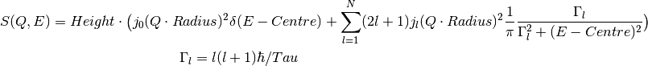
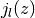
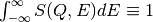

This fitting function models the dynamic structure factor for a particle undergoing continuous and isotropic rotational diffusion [1].

where:
 - Intensity scaling, a fit parameter
- Intensity scaling, a fit parameter - Maximum number of components, an attribute (non-fitting)
- Maximum number of components, an attribute (non-fitting) - Momentum transfer, an attribute (non-fitting)
- Momentum transfer, an attribute (non-fitting) - Radius of rotation, a fit parameter
- Radius of rotation, a fit parameter - Centre of peak, a fit parameter
- Centre of peak, a fit parameter - Relaxation time, inverse of the rotational diffusion coefficient, a fit parameter
- Relaxation time, inverse of the rotational diffusion coefficient, a fit parameterBecause of the spherical symmetry of the problem, the structure factor is expressed in terms of the  spherical Bessel functions.
| Name | Type | Default | Description |
|---|---|---|---|
| N | |||
| NumDeriv | |||
| Q |
(double, default=0.3) Momentum transfer
(integer, default=25) The default N=25 assures normalization condition
 with three significant digits
for  , a comfortable upper bound for the vast majority of QENS data.
, a comfortable upper bound for the vast majority of QENS data.
Example - Global fit to a synthetic signal:
The signal is modeled by the convolution of a resolution function with the structure factor of a rotator. The resolution is modeled as a normal distribution. We insert a random noise in the rotator. Finally, we choose a linear background noise. The goal is to find out the radius of the rotator. the relaxation time, and the overal intensity of the signal with a fit to the following model:

import numpy as np
from scipy.special import sph_jn
"""Generate resolution function with the following properties:
1. Gaussian in Energy
2. Dynamic range = [-0.1, 0.1] meV with spacing 0.0004 meV
3. FWHM = 0.005 meV
"""
E0=0.0012
dE=0.0004
FWHM=0.005
sigma = FWHM/(2*np.sqrt(2*np.log(2)))
dataX = np.arange(-0.1,0.1,dE)
nE=len(dataX)
rdataY = np.exp(-0.5*(dataX/sigma)**2) # the resolution function
Qs = np.array([0.3, 0.5, 0.7, 0.9, 1.1, 1.3, 1.5, 1.9]) # Q-values
nQ = len(Qs)
resolution=CreateWorkspace(np.tile(dataX,nQ), np.tile(rdataY,nQ), NSpec=nQ, UnitX="deltaE",
VerticalAxisUnit="MomentumTransfer", VerticalAxisValues=Qs)
"""Generate the signal of a particle undergoing isotropic rotational diffusion.
1. Radius of rotation = 0.45 Angstroms
2. Relaxation time = 26 ps
3. linear background noise, up to 10% of the inelastic intensity
4. Up to 10% of noise in the quasi-elastic signal
"""
R=0.45; tau=26; hbar=0.658211626 # units of hbar are ps*meV
N=25 # number of harmonics in the inelastic signal
qdataY=np.empty(0) # will hold all Q-values (all spectra)
H=2-np.random.random() # global intensity
for Q in Qs:
centre=0 # some shift along the energy axis
dataY=np.zeros(nE)
js=sph_jn(N,Q*R)[0] # spherical bessel functions from L=0 to L=N
for L in range(1,N+1):
HWHM = L*(L+1)*hbar/tau
aL = (2*L+1)*js[L]**2
dataY += H*aL/np.pi * HWHM/(HWHM**2+(dataX-centre)**2) # add inelastic component
dataY = dE*np.convolve(rdataY, dataY, mode="same") # convolve with resolution
noise = dataY*np.random.random(nE)*0.1 # noise is up to 10% of the elastic signal
background = np.random.random()+np.random.random()*dataX # linear background
background = (0.1*H*max(dataY)) * (background/max(np.abs(background))) # up to 1%
dataY += background
dataY += H*(js[0]**2)*np.exp(-0.5*((dataX-centre)/sigma)**2) # the elastic component
qdataY=np.append(qdataY, dataY)
data=CreateWorkspace(np.tile(dataX,nQ), qdataY, NSpec=nQ, UnitX="deltaE",
VerticalAxisUnit="MomentumTransfer", VerticalAxisValues=Qs)
"""Our model is:
S(Q,E) = Convolution(resolution, IsoRotDiff) + LinearBackground
We do a global fit (all spectra) to find out the radius, relaxation time, and intensity
"""
# This is the template fitting model for each spectrum (each Q-value):
single_model_template="""(composite=Convolution,FixResolution=true,NumDeriv=true;
name=TabulatedFunction,Workspace=resolution,WorkspaceIndex=_WI_,Scaling=1,Shift=0,XScaling=1;
(name=IsoRotDiff,NumDeriv=true,Q=_Q_,f0.Height=1,f0.Centre=0,f0.Radius=0.98,Tau=10));
name=LinearBackground,A0=0,A1=0"""
# Now create the string representation of the global model (all spectra, all Q-values):
global_model="composite=MultiDomainFunction,NumDeriv=true;"
wi=0
for Q in Qs:
single_model = single_model_template.replace("_Q_", str(Q)) # insert Q-value
single_model = single_model.replace("_WI_", str(wi)) # workspace index
global_model += "(composite=CompositeFunction,NumDeriv=true,$domains=i;{0});\n".format(single_model)
wi+=1
# The Height, Radius, and Tau are the same for all spectra, thus tie them:
ties=['='.join(["f{0}.f0.f1.f0.Height".format(wi) for wi in reversed(range(nQ))]),
'='.join(["f{0}.f0.f1.f0.Radius".format(wi) for wi in reversed(range(nQ))]),
'='.join(["f{0}.f0.f1.f1.Tau".format(wi) for wi in reversed(range(nQ))]) ]
global_model += "ties=("+','.join(ties)+')' # tie Radius
# Now relate each domain(i.e. spectrum) to each single model
domain_model=dict()
for wi in range(nQ):
if wi == 0:
domain_model.update({"InputWorkspace": data.name(), "WorkspaceIndex": str(wi),
"StartX": "-0.09", "EndX": "0.09"})
else:
domain_model.update({"InputWorkspace_"+str(wi): data.name(), "WorkspaceIndex_"+str(wi): str(wi),
"StartX_"+str(wi): "-0.09", "EndX_"+str(wi): "0.09"})
# Invoke the Fit algorithm using global_model and domain_model:
output_workspace = "glofit_"+data.name()
Fit(Function=global_model, Output=output_workspace, CreateOutput=True, MaxIterations=500, **domain_model)
# Extract Height, Radius, and Tau from workspace glofit_data_Parameters, the output of Fit:
nparms=0
parameter_ws = mtd[output_workspace+"_Parameters"]
for irow in range(parameter_ws.rowCount()):
row = parameter_ws.row(irow)
if row["Name"]=="f0.f0.f1.Radius":
Radius=row["Value"]
nparms+=1
elif row["Name"]=="f0.f0.f1.Height":
Height=row["Value"]
nparms+=1
elif row["Name"]=="f0.f0.f1.Tau":
Tau=row["Value"]
nparms+=1
if nparms==3:
break # We got the three parameters we are interested in
# Check nominal and optimal values are within error ranges:
if abs(H-Height)/H < 0.1:
print "Optimal Height within 10% of nominal value"
else:
print "Error. Obtained Height=",Height," instead of",H
if abs(R-Radius)/R < 0.05:
print "Optimal Radius within 5% of nominal value"
else:
print "Error. Obtained Radius=",Radius," instead of",R
if abs(tau-Tau)/tau < 0.1:
print "Optimal Tau within 10% of nominal value"
else:
print "Error. Obtained Tau=",Tau," instead of",tau
Output:
Optimal Height within 10% of nominal value
Optimal Radius within 5% of nominal value
Optimal Tau within 10% of nominal value
Categories: FitFunctions | QuasiElastic